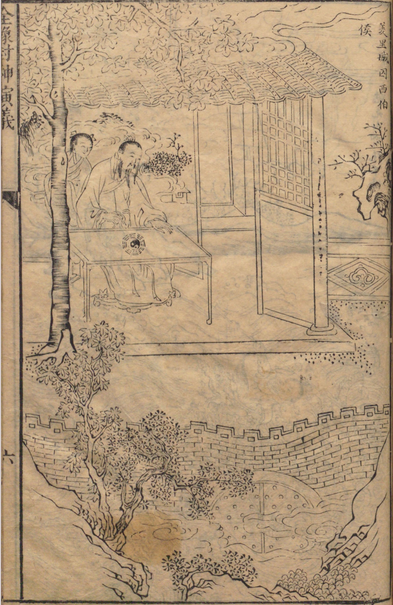
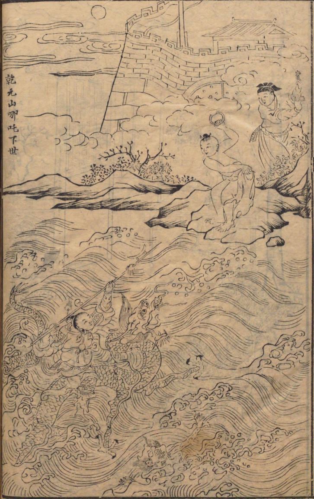
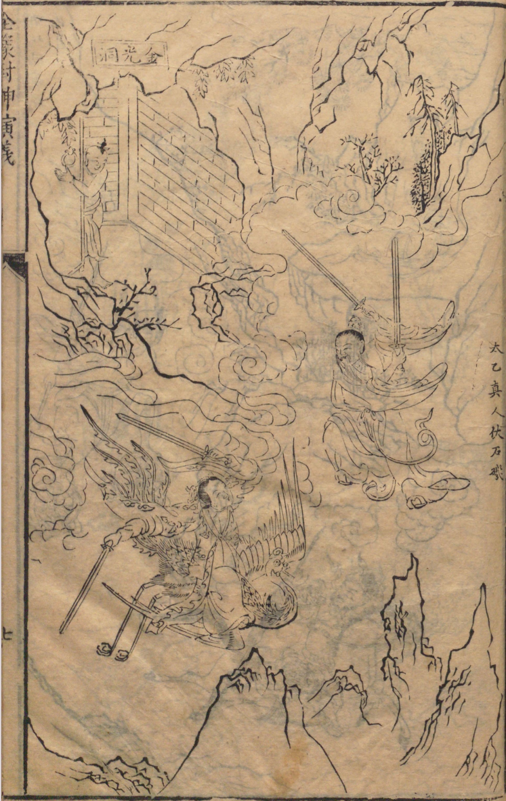
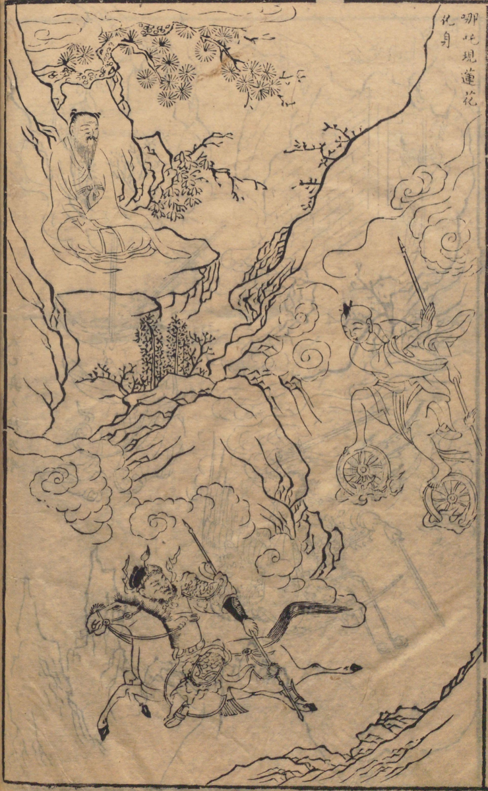
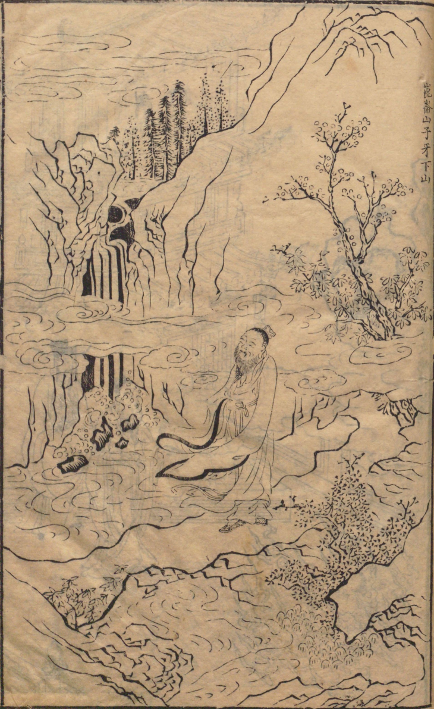
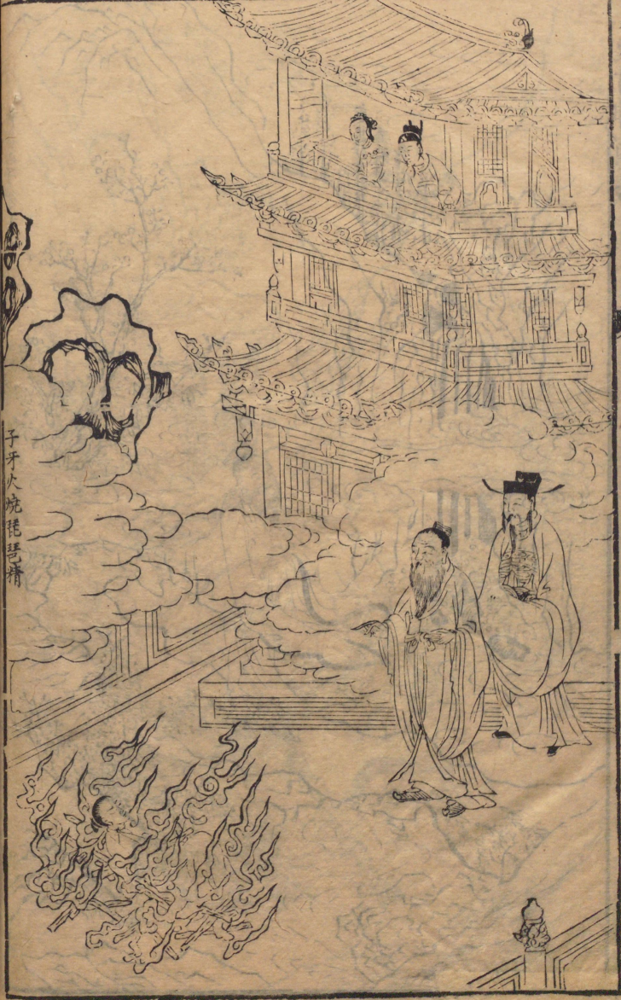
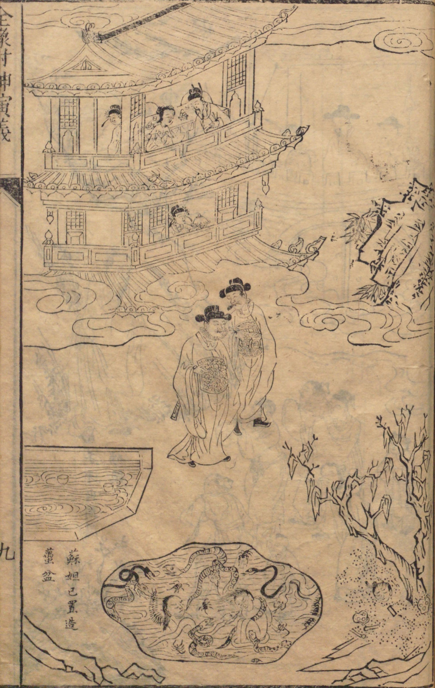
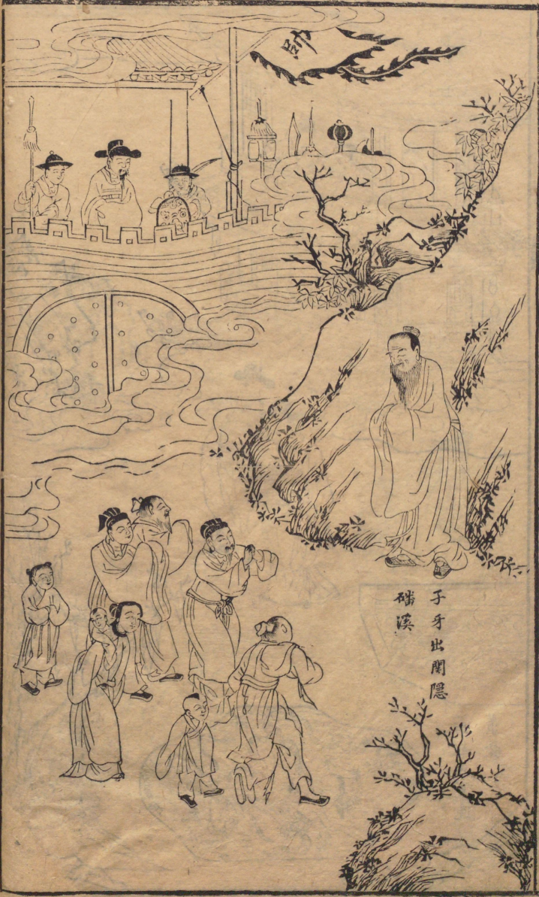
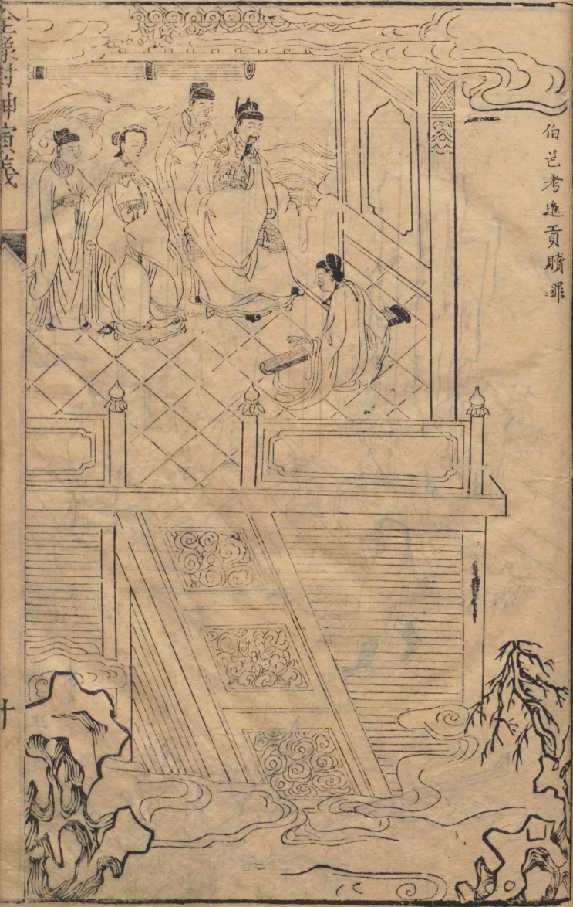
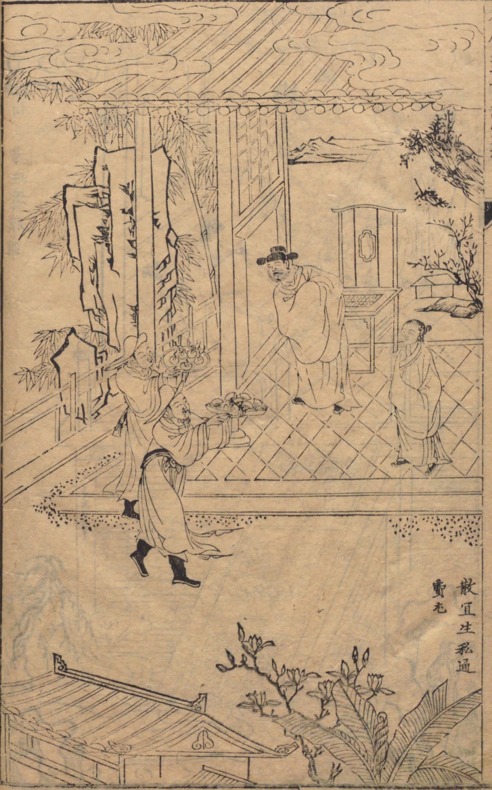

Illustrations of Chapter 11 to Chapter 20
Index
Prev.

Chapter 11: Grand Duke of the West is Imprisoned at Youli City (羑里城囚西伯侯)

Chapter 12: The Birth of Nezha at Chentang Pass (陈塘关哪吒出世)

Chapter 13: Sage Taiyi Subdues Shiji (太乙真人收石矶)

Chapter 14: Nezha is Reborn in a Lotus Body(哪吒现莲花化身)

Chapter 15: Ziya Leaves Mt. Kunlun (昆仑山子牙下山)

Chapter 16: Ziya Roasts the Pipa Demoness with Flames (子牙火烧琵琶精)

Chapter 17: Su Daji Constructs the Serpent Pits (苏妲己置造虿盆)

Chapter 18: Ziya Becomes a Hermit at Pan Creek after Failing to Deter his Lord (子牙谏主隐磻溪)

Chapter 19: Boyi Kao Presents Tribunes to King Zhou to Redeem his Father (伯邑考进贡赎罪)

Chapter 20: San Yisheng Bribes Fei and You in Private (散宜生私通费尤)
Next: Chapter 21 to 30